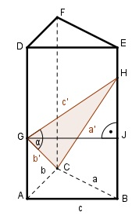

Aufgabe 173 Durch die Grundseite a = 4 cm eines geraden regelmäßigen dreiseitigen Prismas verläuft eine Ebene, die um 50,7° geneigt ist. Wie groß ist das Volumen V der abgeschnittenen Pyramide?

Im Dreieck AHG: Satz von Pythagoras: a2 = h2 + (a/2)2 | -(a/2)2 h2 = a2 - (a/2)2 h2 = a2 - a2/4 3 h2 = --- * a2 |√ 4 a 4 cm h = --- * √3 = ------- *√3 = 3,5 cm 2 2 Im rechtwinkligen Dreieck HGE (Winkel bei H = α): h’ tan α = ---- | *h h h’ = h * tan α = = 3,5 cm * tan 50,7° = 3,5 cm * 1,2218 = 4,3 cm Volumen VP der abgeschnittenen Pyramide: AG * h’ a * h * h’ VP = ---------- = ------------- = 3 3 a * a/2 * √3 * h’ -------------------- 2 = -------------------- = 3 4 cm * 2 cm * √3 * 4,3 cm = ----------------------------- = 9,9 cm3 6